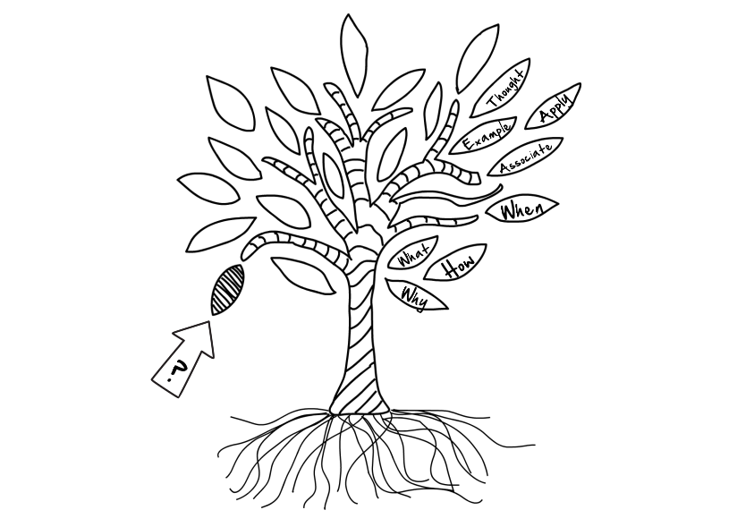

4 Learn Right
4.1 Knowledge organization¶
Chunking¶
Summary
Chunking is a method of presenting information which splits concepts into small pieces or "chunks" of information to make reading and understanding faster and easier.
There are 3 main ways of chunking:
Grouping: You can organize any information into groups.
Patterns: You can organize information by finding patterns in the information. When you find a pattern in information you just need to remember the pattern.
Organizing: You can organize information based on its meaning. (e.g. You can organize people by their age, then, for each age group, remember the people that belong to that group.)
Advantages of chunking:
- It is easier for you to digest.
- It is easier to digest and remember smaller pieces of information
- It is easier to form an organized hierarchical structure in your brain.
Interleaving¶
Summary
Interleaving discribes the studying of related skills or concepts in parallel and with various kinds of medias and thereby training your brain in a surprisingly effective way.
Follow those tips to get startet with interleaving:
- Use written text, pictures, videos and sound-recordings to learn.
- While doing a MOOC look for external materials on the content you are learning.
- Try to make connections with other relevant concepts to expand the specific concept which you are learning right now.Advantages of chunking:
Distributed practice¶
Summary
Distributed practice is a technique whereby you distributes your study effort in a given course over many study sessions that are relatively short in duration.
Follow those tips to get startet with interleaving:
- Use written text, pictures, videos and sound-recordings to learn.
- While doing a MOOC look for external materials on the content you are learning.
- Try to make connections with other relevant concepts to expand the specific concept which you are learning right now.Advantages of chunking:
Note-taking¶
Summary
Effective note-taking from lectures and readings is an essential skill for university study. A good note-taking system helps help you to figure out where the information you have learned should go in your knowledge tree.
When taking note of a new concept, these four questions will help you to gain a basic understand of the concept you are learning:
- What? (definition of a concept)
- Why? (reason why the concept is important)
- How? (how should the concept be used)
- When? (when should the concept be used)
Tip
You can use this PDF every time you are taking note of a new concept.
To gain an even deeper understanding of the concept, keep the following headwords in mind:
- Association (previous things you learned)
- Example (representative example of the concept)
- Application (how to apply the concept in the real world)
- Food for thought (what parts of the concept are inspiring, innovative or might raise an ethical dilemma)
 Visualization of note-taking as a knowledge tree.
4.2 Applying your knowledge¶
Summary
It’s important to use knowledge integration in different contexts. You can do this either by practicing your knowledge around others, by talking to them, asking questions, and listening to their opinions.
Tips for applying your knowledge¶
Use the following tips to apply your knowledge in the real word:
- talk to other people (either in person or on a virtual platform such as the Kiron Forum)
- teach others
- ask questions
- discuss and debate your opinions on a certain topic
- share your insights with others.
- help others to solve problems.
Tip
Do not be scared! People are willing to talk and engage with you.
4.3 The role of the assessor¶

Summary
Taking MOOCs and working towards a degree requires you to be your own Assessor. You need to constantly assess how much you have actually learned, and acknowledge what you don’t yet know.
Questions for gaining a better understanding of what you have learned¶
To gain a better understanding of what you have learned through a course, ask yourself the following questions after finishing a chapter:
- Could I teach these concepts to a high school student?
- What are some questions I still have?
- What don’t I understand?
- Is anything confusing me?
- Have I forgotten anything already?
Tip
While reading or going through a course, make sure you are writing down questions that come up!
4.4 Your personal way to learn right¶
Summary
The tools and methods you have learned they only become useful when you take them and use them to have a better learning experience.
Taking ownership of your tools¶
To adapt and apply our tools and methods to your everyday live, follow those guidelines:
- Teach and share your newly acquired knowledge with your community and friends.
- If you have a specific note-taking system that works well for you there is no reason
- If you do not have access to additional books or videos for interleaving your studies just do the optional sections of a MOOC.
Tip
These tools are not mandatory rules of how to study. They are only meant to provide you with guidelines, initial knowledge, and inspiration in terms of how to succeed as an online learner